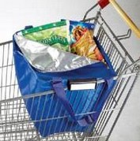
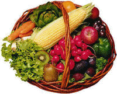
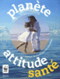

C’est vrai, il n’est pas évident pour le consommateur de s’y retrouver : puisque les produits chimiques sont sur le marché, c’est qu’ils ne doivent pas être si mauvais que cela ! Comment puis-je décrypter ces étiquettes avec des listes incomplètes de noms aux connotations souvent barbares que seule une personne initiée est à même de comprendre. Des chercheurs, des médecins et des ONG alertent pourtant sur les imperfections de notre système qui n’intègre pas toujours les dernières connaissances scientifiques ou qui choisit, tout simplement, de « faire de l’argent ». |
 |
Les solutions sont pourtant très souvent à notre portée car nous jouissons de deux grands pouvoirs : celui d’éco-consommateur qui choisit ce qu’il achète, et celui d’acteur, qui décide, au quotidien, d’adopter des comportements respectueux ou non de son environnement.
|  | En tant que consommateur nous pouvons effectivement privilégier des solutions moins chimiques, voire même totalement naturelles, pour aménager et nettoyer notre intérieur ou entretenir notre jardin. Nous pouvons également opter pour des produits frais locaux et de saison qui ont moins besoin d’artifices pour être conservés et transportés, et pousser pour que des produits issus de l’Agriculture Biologique soient servis dans les cantines de nos écoles. Conscients de tous les produits chimiques contenus dans nos emballages et dans nos achats, nous pouvons au moins nous appliquer à trier au quotidien pour que ces déchets soient recyclés au mieux. |
Lucide sur la difficulté que représente pour chacun d’entre nous l’appréhension des dangers de ce monde chimique et des solutions pourtant applicables pour nous protéger, le WWF communique.
|  | En alertant les médias, l’ONG a mis en lumière le fait que le sang des familles européennes était contaminé sur trois générations par un cocktail de produits chimiques. Au travers de collaborations diverses avec des médecins et la CPAM de la Sarthe, le WWF a mis en Le livre Planète-Attitude-Santé, réalisé par l’association, démontre que nous avons tous le pouvoir et la capacité de favoriser le bien être de la planète, et donc le notre, dans nos comportements de tous les jours. Le reste est une question de volonté… |